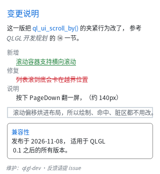
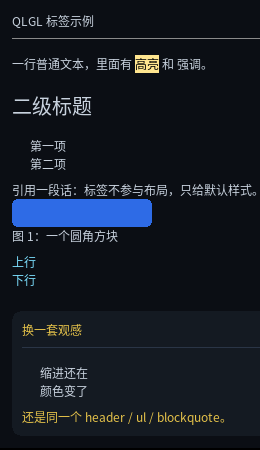

标签与语义
这一章讲 HTML 标签。
先说清楚一件事：在这套架构里，标签几乎不参与渲染。布局和绘制只看编译出来的
QLUIStyle（layout / paint 的字段），不看标签。标签只影响三样东西：
- UA 默认样式（相当于浏览器的内置样式表）；
tag选择器（header { color: ... }）；- 调试与查询（
ql_ui_tag_name(node->src->tag)取回 "header"）。
所以"加一个标签"的代价几乎是零，而"标签不够用"的代价很实际：真实 HTML 片段贴进来 直接报错。
现支持的 80 个标签
HTML5 一共 114 个元素，本库现在认其中 80 个。全量清单（含每个标签的状态、能力包、 MCU 裁剪）在 HTML5 标签覆盖与裁剪，这里只给常用分组：
| 类 | 标签 |
|---|---|
| 容器 / 结构 | div section header footer nav main article aside figure figcaption blockquote html body hgroup search |
| 标题 | h1 h2 h3 h4 h5 h6 |
| 文本块 | p dl dt dd menu address |
| 行内 | span b i em strong u s mark del ins |
| 行内（纯语义） | a abbr code kbd samp var q dfn cite data time small bdi bdo |
| 列表 | ul ol li |
| 空元素 | hr br wbr |
| 控件 | button |
| 输入 | input（type 只支持 text / password，见输入控件） |
| 下拉 | select option optgroup（后两个自动 display: none，见输入控件） |
| 表单外壳 | form label fieldset legend（没有提交、没有校验） |
| 文档元数据 | base head link meta style title（解析期整段跳过，不进树） |
| 进度 / 度量 | progress meter（见下面"进度条"）、output、datalist（不显示） |
| 折叠面板 | details summary（见下面"折叠面板"） |
| 浮层 | dialog（见下面"浮层"） |
| 位图 | img（见下面"图片"） |
新加的这批叫纯语义标签：它们不引入任何新能力，只是"别再报错"。所以要说清楚 哪些看得出区别、哪些看不出：
| 看得出区别 | 为什么 |
|---|---|
dl / dt / dd |
dl 有 margin，dd 缩进 18px |
cite / var / dfn / address |
斜体（合成斜体，见 §5.4.8 那种） |
del / ins |
删除线 / 下划线（装饰线已经支持） |
fieldset |
自带 1px 圆角边框 |
| 看不出区别 | 缺什么 |
|---|---|
a |
没有 href 导航、没有光标；就是一段带颜色的文字 |
abbr |
没有 title tooltip |
code / kbd / samp |
没有等宽字体族（font-family 还没做） |
q |
没有生成引号（本库没有生成内容） |
time / data |
datetime / value 属性被忽略 |
small |
没有相对字号单位（em / smaller） |
bdi / bdo |
没有双向文本（RTL）支持 |
wbr |
没有"可选断点"（不影响折行） |
form / label / legend / optgroup |
纯排版盒子；optgroup 的组名不画 |
图片：src 只是资源名
<img src="logo.png"> <!-- 名字，不是路径 -->
<img src="logo.png" style="width:32px"> <!-- CSS 尺寸优先 -->
字节从哪来有两处，任选：
/* ① 运行期注册（demo / 从文件或网络拿到） */
QLUIImageInput in = {
.name = "logo.png",
.data = raw_pixels, .len = sizeof(raw_pixels),
.w = 8, .h = 8,
.format = QL_IMAGE_SRC_RAW, /* 已解码的像素 */
.pixel_format = QL_IMAGE_RGB565,
};
ql_ui_register_image(ui, &in); /* 内部会重排 */
/* ② 构建期转码：qltext assets 转成 RAW 塞进 doc 的资源段（P3f，待做） */
几条规矩：
| 项 | 现状 |
|---|---|
| 布局的尺寸 | 来自资源条目的 w/h，所以图没解出来也占对位置 |
| CSS 给了宽度、高度 auto | 按宽高比推高（整数运算） |
| 没给任何尺寸 | 用图片的固有像素尺寸 |
object-fit |
只有 fill（拉伸）；其余四态还没做 |
| 格式 | 现在只认 RAW（构建期已解好的像素）；PNG/BMP/QOI 按开关逐个落地 |
| 名字对不上 / 格式不支持 | 明确报错（QL_ERR_INVAL / QL_ERR_UNSUPPORTED），不静默画空白 |
浮层：<dialog> 是真的盖在最上面
<dialog id="dlg"> <!-- 默认不显示；加 open 或调 API 才出来 -->
<div>真的删掉吗？</div>
</dialog>
ql_ui_dialog_set_open(ui, dlg, 1); /* 打开：居中 + 压暗背景 */
ql_ui_dialog_open(ui, dlg); /* 1 / 0 */
ql_ui_dialog_close_top(ui); /* 关掉最上层那个 */
点遮罩或按 Esc 都会关掉。已知限制：不做焦点圈定（Tab 不会被困在框里）、
不支持嵌套模态、宽度固定为 UA 的 70%。
折叠面板：点标题行展开
<details open> <!-- 去掉 open 就是默认收起 -->
<summary>点我展开</summary>
<div>只有展开时才占位</div>
</details>
运行期：ql_ui_details_set_open(ui, node, 1) / ql_ui_details_open(ui, node)。
收起时把非 summary 的子节点指向一份共享的隐藏样式（display: none），
所以布局、绘制、命中测试一行都不用改；切换内部会重排（高度变了）。
没有三角标记（本库没有生成内容
::marker），可以自己写一个▸字符。
进度条：轨道与填充都是 CSS
<progress value="70" max="100"></progress> <!-- 70% -->
<meter value="1" max="4"></meter> <!-- 25% -->
<progress></progress> <!-- 没有 value = 不确定，画 1/3 -->
progress { width: 120px; height: 8px; border-radius: 4px;
background-color: #E3E6EA; /* 轨道 */
color: #0969DA } /* 填充 */
运行期改"多满"：ql_ui_progress_set(ui, node, value, max)、
读：ql_ui_progress_permille(ui, node)（0..1000；-2 = 不确定）。
内部只存完成度，不存 value/max —— 布局与绘制都只需要这一个数。 不确定进度不跑动画（会跑的进度条要求主循环一直醒着，本库省电优先）。
顺带一个很实用的能力：整页 HTML 可以直接贴。<head> / <title> / <meta> /
<link> / <style> 会在解析期整段跳过，<style> 的内容连字都不会进界面：
<!DOCTYPE html>
<html><head><title>标题</title>
<meta charset="utf-8"><style>.a { color: #f00 }</style>
</head><body><div class="a">hello</div></body></html>
一张全是语义标签的页面（dl 缩进、cite 斜体、del/ins 装饰线、fieldset 边框）：

完整程序：example/11_semantic.c。
UA 默认样式都很薄，只有"看结构就该知道"的那些：
/* 大致相当于内置样式表的全部内容 */
div, section, header, footer, nav, main, article, aside,
figure, figcaption, blockquote, p, li { display: block; }
span, b, i, em, strong, u, s { display: inline; }
h1 { font-size: 24px; margin: 10px 0 }
h2 { font-size: 20px; margin: 9px 0 } /* …到 h6 递减 */
p { margin: 8px 0 }
ul, ol { margin: 8px 0; padding-left: 18px }
hr { height: 1px; background-color: #8A8A8A; margin: 8px 0 }
mark { background-color: #FFE58F; color: #000 }
input, select { display: inline-block; /* 内边距 + 边框 + 圆角 */ }
option, optgroup { display: none } /* 只活在下拉面板里 */
/* 纯语义标签：只给 display，外加几处"真的看得出"的 */
a, abbr, code, kbd, samp, q, data, time, small, bdi, bdo { display: inline; }
cite, var, dfn { display: inline; font-style: italic }
del { display: inline; text-decoration: line-through }
ins { display: inline; text-decoration: underline }
dl { margin: 8px 0 }
dd { padding-left: 18px }
menu { margin: 8px 0; padding-left: 18px }
address { font-style: italic }
fieldset { margin: 8px 0; padding: 8px; border: 1px solid #8A8A8A; border-radius: 4px }
注意这是给这个库的观感调的，不是"和 Chrome 截图一致"调的（比如 p 的
margin 是 8px 而不是 1em）。
一个完整的文章页

static const char *k_html =
"<div id=\"root\">"
" <header>QLGL 标签示例</header>"
" <hr>"
" <p>普通文本，<mark>高亮</mark>，<em>强调</em>，<strong>更强</strong>。</p>"
" <ul><li>第一项</li><li>第二项</li></ul>"
" <blockquote>引用一段话</blockquote>"
" <figure><div class=\"box\"></div>"
" <figcaption>图 1：一个方块</figcaption></figure>"
"</div>";
static const char *k_css =
"#root { width: 260px; background-color: #0B0E14; color: #C8D2DE;"
" font-size: 12px; }"
"header { font-size: 14px; color: #7CE0FF; }"
"blockquote { margin: 8px 10px; color: #8A94A0; }"
"figcaption { font-size: 11px; color: #6C7783; }"
".box { width: 140px; height: 28px; border-radius: 4px;"
" background-color: #2E6BE6; }";
完整可运行的版本见 example/08_tags.c。
三个必须知道的"不完美"
1. 字体变体是合成的，不是换了字体文件
b/strong = 加粗，i/em = 斜体，u = 下划线，s = 删除线。
它们靠三个"穷人版"实现，不加载第二个字体文件（MCU 上也不可能）：
| 效果 | 做法 | 代价 |
|---|---|---|
| 加粗 | 字形再画一遍，右移 1px | 墨迹多约 1.6 倍（面积），像素级 |
| 斜体 | 按行剪切，顶部右移 高度 × 0.21 |
每行起点差 1px，行内像素连续写 |
| 下划线 / 删除线 | 画一条 1px 横线 | 1 个矩形 |
这意味着：小字号下斜体看起来会比较"硬"（每行只能挪整像素），
加粗也不是真字重的形状。要求高就自己提供粗体字重的字体文件并换 font-family
（本库还没有 font-family，所以目前就是合成这一条路）。
对应 CSS 是标准写法，可以单独用：
.note { font-weight: bold; font-style: italic; text-decoration: underline; }
font-weight 也吃数字：>= 600 算加粗（normal = 400、bold = 700）。
text-decoration 支持 underline line-through 组合，overline 明确报错。
2. 列表不画项目符号
本库没有生成内容（::before / ::marker），所以 <ul> 只给你缩进和块级结构，
• 要自己写：
<ul><li>• 第一项</li><li>• 第二项</li></ul>
3. <br> 是一个"高度为 0 的块"
没有生成内容，也没法在一个文本节点里插换行。但块级元素会结束当前行内行， 所以一个高度 0 的块刚好等于"换一行"：
<div><span>a</span><br><span>b</span></div> <!-- a、b 分两行 -->
代价是它占一个节点（不是纯文本里的 \n）。
行内元素之间的空格会被保留
这件事看起来小，但真实 HTML 里到处都是：
<p>plain <mark>mark</mark> <em>em</em> <strong>strong</strong></p>
<!-- 渲染成 "plain mark em strong"，不是 "plain markemstrong" -->
规则与 CSS 一致：
| 情况 | 做法 |
|---|---|
| 两个行内元素之间只有空白 | 保留成一个空格 |
| 两个块级元素之间只有空白 | 丢掉（否则每个缩进都变一行） |
| 行首 / 行尾的空白 | 丢掉 |
| flex 容器里只含空白的项 | 不渲染（CSS：匿名 flex 项只含空白时不生成） |
它是在解析期决定的，靠的是标签的默认 display —— 那时级联还没跑。
所以你把 span 改成 display: block，这个判断不会跟着变（这种写法本来就该自己管空白）。
明确报错的三个标签
写不了就直说，并且告诉你替代做法：
HTML: 不支持 <img>（本库没有图片解码器）：装饰用 div + background-image / 圆角做，
图标用字体字符或 SDF 图元做
HTML: 不支持 <input>（还没有输入控件）：文本展示用 div，点击用 :active/:hover + 事件
HTML: 不支持表格 <table>：用嵌套的 flex 行来做